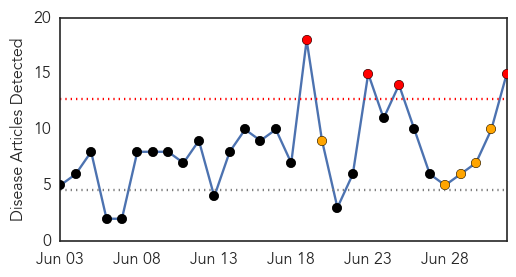
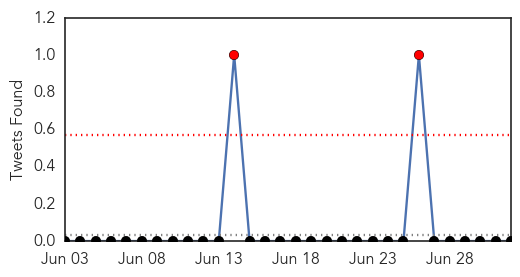
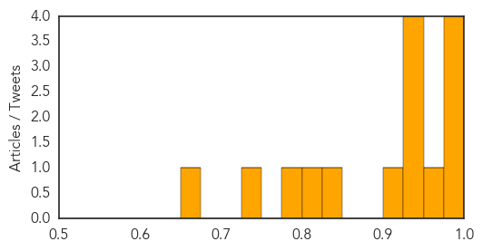
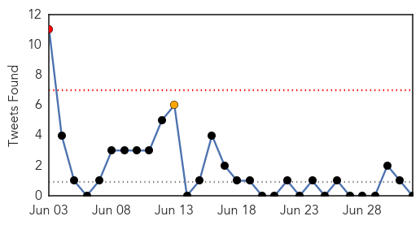

Dengue Fever
30-Day Web Trend
4 alerts, 5 warnings

30-Day Twitter Trend
3 alerts, 0 warnings

Article Locations

Article Confidences
Top Articles:
- 0.998
- Dengue fever on rise in Ho Chi Minh City
- 0.987
- Oxitec Mosquito Works to Control Aedes aegypti in Dengue Hotspot -- OXFORD, England, July 2, 2015 /PR Newswire UK/ --
- 0.987
- Oxitec Mosquito Works to Control Aedes aegypti in Dengue Hotspot -- OXFORD, England, July 2, 2015
- 0.981
- Health Crisis in Yemen
- 0.975
- Oxitec Mosquito Works to Control Aedes aegypti in Dengue Hotspot
- 0.948
- Delhi govt takes steps to curb mosquito-borne diseases
- 0.935
- S'pore team closer to creating 4-in-1 'cocktail' to fight dengue, Singapore News & Top Stories
- 0.931
- Dengue cases rising in N. Cotabato, drive vs virus intensified
- 0.927
- Vigilance urged as Taiwan sees more dengue fever cases: CDC
- 0.907
- Be Ready to Tackle Dengue Cases: Nadda
- 0.834
- Researchers Edge Closer to Cure for Dengue Fever
- 0.814
- With no plan in action this monsoon, can BMC tackle mosquito menace in Andheri?
- 0.794
- Houthi shells kill 18 in Yemen, dengue fever spreading
- 0.748
- Oxitec Mosquito Works To Control Aedes Aegypti In Dengue Hotspot
- 0.655
- Varsities to help fight dengue - Nation
Top Tweets:
-
No tweets found for Jul 02, 2015
Unknown
30-Day Web Trend
14 alerts, 4 warnings

30-Day Twitter Trend
1 alerts, 2 warnings

Article Locations

Article Confidences

Top Articles:
- 0.998
- (2nd LD) After 4-day hiatus, new MERS case reported in S. Korea
- 0.996
- New MERS case reported
- 0.996
- MERS outbreak: After four days of hiatus, South Korea reports new case
- 0.996
- 183 Infected, 32 Dead In South Korea From Deadly Middle East Respiratory Virus
- 0.988
- New MERS infection dashes South Korean hopes
- 0.981
- MERS virus could hit the UK, health expert warns
- 0.951
- Bird flu detected in Turkey's most crowded city
- 0.917
- Chicago Tribune
- 0.917
- Chicago Tribune
- 0.917
- Chicago Tribune
- 0.917
- Chicago Tribune
- 0.917
- Chicago Tribune
- 0.917
- Chicago Tribune
- 0.917
- Chicago Tribune
- 0.917
- Chicago Tribune
- 0.917
- Chicago Tribune
- 0.917
- Chicago Tribune
- 0.917
- Chicago Tribune
- 0.917
- Chicago Tribune
- 0.917
- Chicago Tribune
- 0.917
- Chicago Tribune
- 0.917
- Chicago Tribune
- 0.917
- Chicago Tribune
- 0.917
- Chicago Tribune
- 0.917
- Chicago Tribune
- 0.917
- Chicago Tribune
- 0.917
- Chicago Tribune
- 0.916
- Pattaya News, Communities, Opinions and much more...
- 0.916
- Hong Kong reports first Japanese encephalitis case of 2015, Taiwan JE total reaches 10
- 0.900
- Legislators call for comprehensive Lyme report
- 0.899
- More Hong Kong tours to South Korea cancelled over MERS
- 0.893
- New Virus, Not EV-D68, Now Suspected in Childhood Paralysis
- 0.890
- Top Stories
- 0.889
- Pattaya News, Communities, Opinions and much more...
- 0.886
- Citizens do their part in the MERS fight-INSIDE Korea JoongAng Daily
- 0.879
- DOH denies Korean in Bacolod City tested positive for Mers
- 0.874
- Diphtheria outbreak blocked in Quang Nam
- 0.872
- Korean in Bacolod tests negative for MERS
- 0.860
- Group releases findings of Lyme disease study in Ravalli County
- 0.813
- Ghana runs out of kits for testing Bird flu
- 0.803
- Renal Failure Cases on Rise
- 0.773
- Tennessee prepares for potential Avian flu outbreak
- 0.754
- Mosquito-borne viruses subject of $4 million in federal grants to Pitt vaccine researchers
- 0.711
- 1 Dead, 248 Sick In Salmonella Outbreak Linked To North Carolina Roadside Joint
- 0.705
- Cyclospora Parasite Outbreak in Texas
- 0.668
- S. Korean diplomats in China hold regular meeting this week
- 0.665
- Bird flu cases detected in Istanbul’s Kartal, Arnavutköy: Report
- 0.653
- 11 more heatstroke victims pass away
- 0.649
- Sorry, deze pagina kon niet gevonden worden.
- 0.646
- Tripura: High Court is finding reason of malarial deaths : India, News
Showing top 50 articles...
Top Tweets:
-
No tweets found for Jul 02, 2015